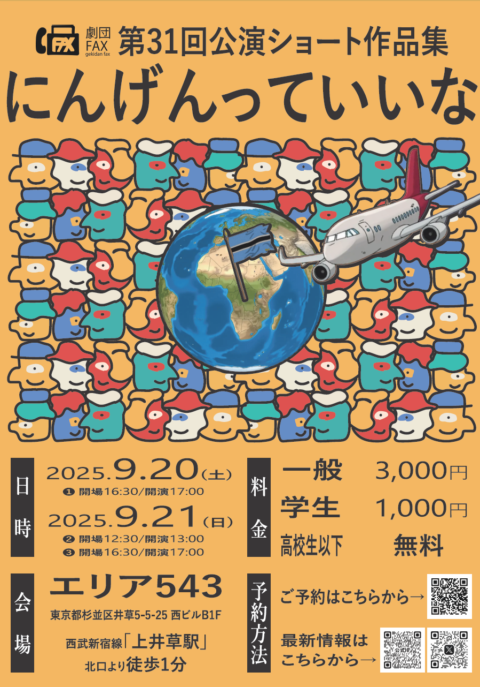
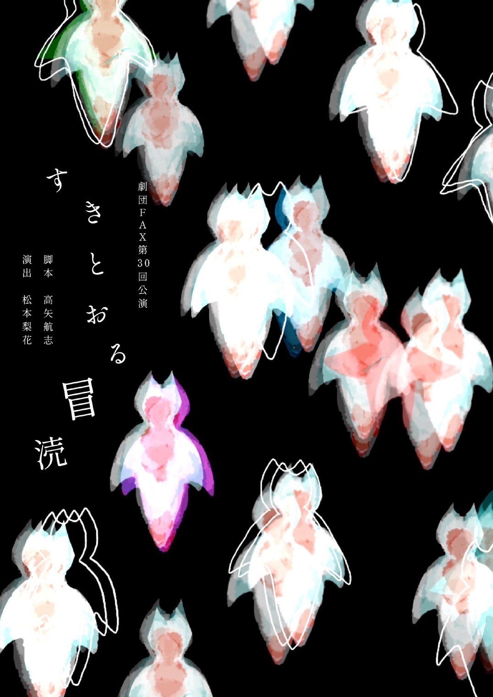
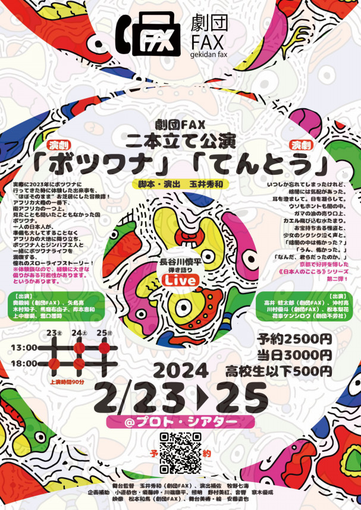
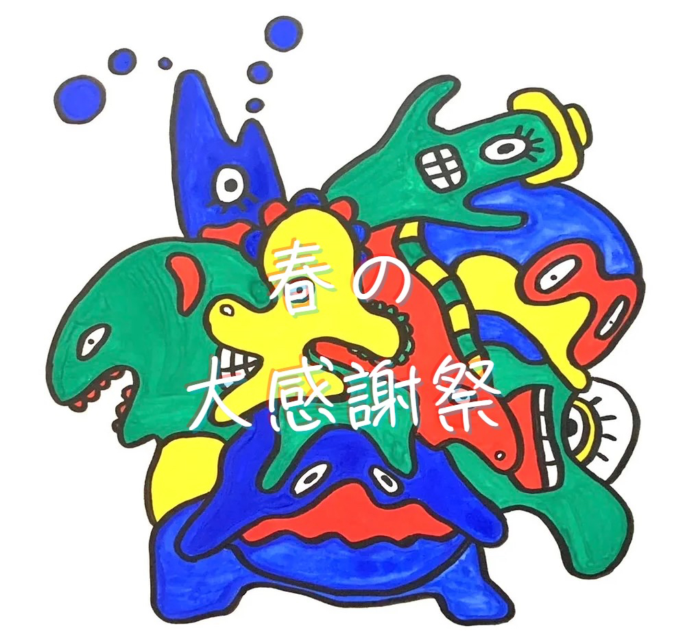
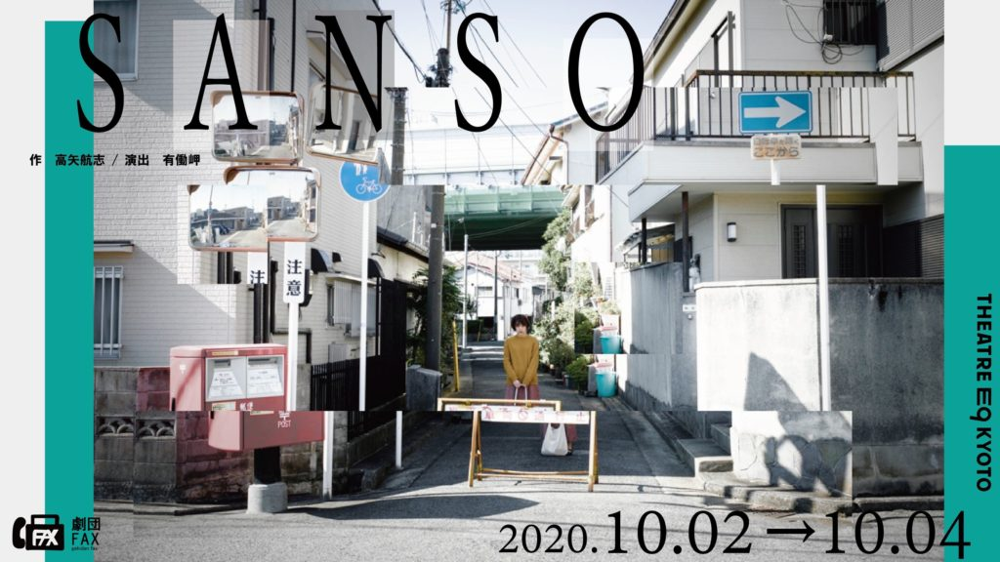
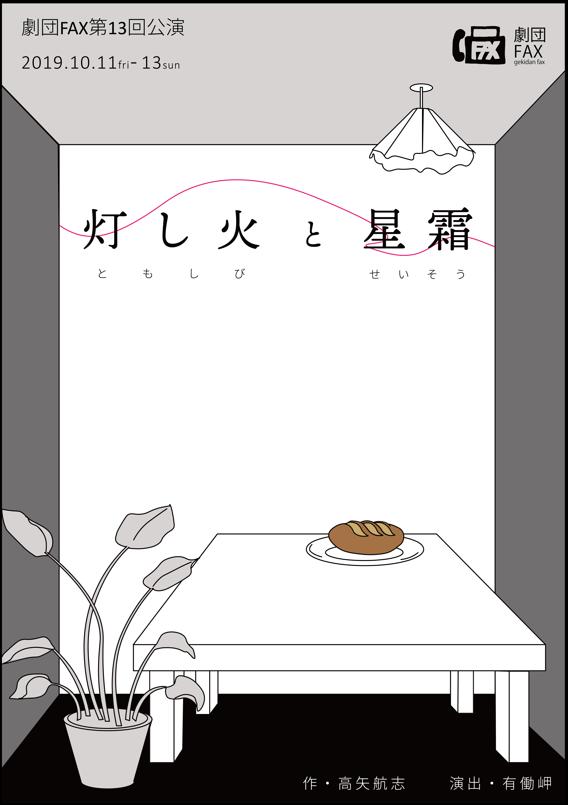
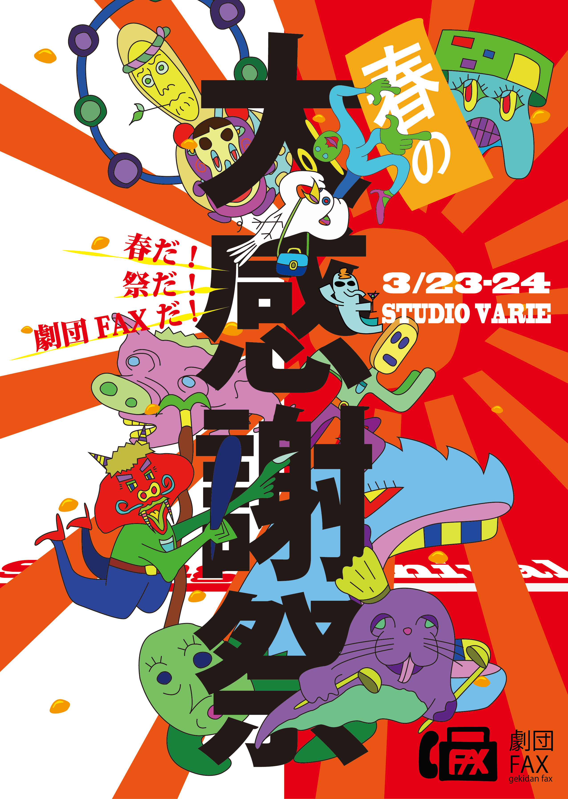
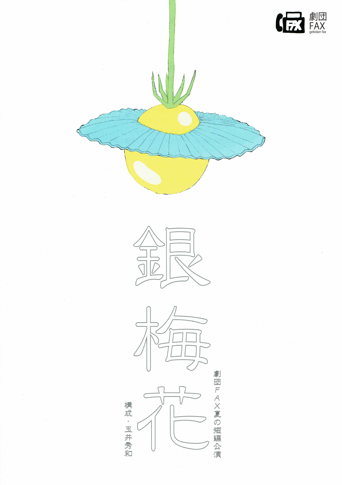
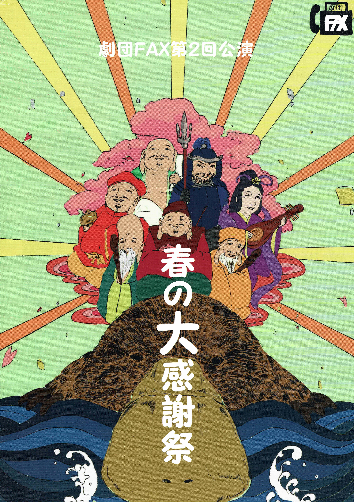
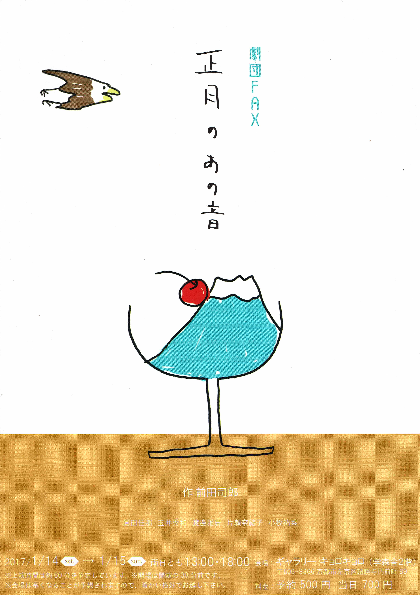

Activity
活動内容
舞台公演にとどまらない、演劇を通じた交流と創造の場。
活動ハイライト
劇団FAXの創作を貫く、3つの柱。

「未知との遭遇」シリーズ
フィールドワーク × 演劇海外でのフィールドワークで得た体験を、ドキュメンタリーとフィクションを交差させて舞台化するシリーズ。第一弾ではアフリカ・ボツワナを題材に、現地で撮影した写真や映像を背景に投影しながら、体験をほぼそのまま舞台上に再現。過激なシーンは「見立て」で行うなど、演劇的工夫とリアルの間を行き来する作品を上演しました。
最新作『キルギスのやつ』では、中央アジア・キルギス共和国での約5ヶ月間の滞在で触れた遊牧文化・伝統芸能・民話・死生観・食文化を素材に、演劇上演に加えて展示・トークイベント・物販を組み合わせた複合型の文化交流イベントとして展開します。

受賞作品・代表作
E9賞・脚本賞 受賞古今東西の小説・戯曲・詩からの引用を織り交ぜ、古代ギリシャ悲劇『オイディプス』を土台に、現代を生きる価値観を描いた作品。
緻密な会話に引き込まれ次が気になるサスペンスをベースに、スリルと笑いが交錯する長編作品。脚本の高矢航志による代表作。
テント芝居という形式で「実在する場所」と「存在しないかもしれない場所」の境界を溶かす試み。夜の公園で音響も照明も用いず、幽霊の話を上演。作品終盤、幽霊が闇に消えるシーンで突風が吹き、客席にざわめきが生じた伝説的な回。

春の大感謝祭
複合型イベント演劇を超えた「お祭り」。関西で活躍する複数の劇団が一堂に会し短編演劇を披露するほか、物産展、絵画展、AI脚本の即興上演、さらには虫を食べる会（※お客様は食べません）まで――1ステージ5時間に及ぶ、何でもありのイベントです。
出演者とお客さんの垣根を超え、演劇上演を通じて「縁」を創出し、コミュニティとしての力を醸成しようという試み。日常に飽きて非日常を求める人におすすめの、唯一無二の体験を提供しています。
Gallery
舞台の記録
写です_260320_1.jpg)


過去公演一覧
2017年の旗揚げから31公演の軌跡。
2025

作・演出：玉井秀和・高矢航志 エリア543
2025.9.20 - 9.212024

作：高矢航志 演出：松本梨花 遊空間がざびぃ

作・演出：玉井秀和 プロトシアター
2024.2.23 - 2.252023
作：高矢航志 演出：松本和馬 COOL JAPAN PARK OSAKA SSホール／関西演劇祭2023参加作品
東京 2023.3.19 & 3.21 ／ 京都 2023.4.22 - 4.23作・演出：玉井秀和 養正市営住宅6号棟跡地 野外特設舞台／京都学生演劇祭2023エキシビション参加作品

作・演出：玉井秀和・高矢航志・松本和馬 THEATRE E9 KYOTO
2022
作：唐十郎 演出：玉井秀和 ローム・スクエア 特設エリア「石ころの庭」／OKAZAKI PARK STAGE 2022／ステージ インキュベーション キョウト参加作品
作・演出：玉井秀和 養正児童公園「希望の広場」野外特設舞台／京都学生演劇祭2022エキシビション参加作品
作：小佐部明広 演出：玉井秀和 人間座スタジオ／オンライン公演
2021
作：玉井秀和 演出：有働岬 養正児童公園「希望の広場」野外特設舞台／京都学生演劇祭2021エキシビション参加作品

作・演出：玉井秀和 THEATRE E9 KYOTO ※コロナ感染拡大により中止
2021.8.26 - 8.29作：小佐部明広 演出：松本和馬 人間座スタジオ／オンライン360度配信公演
作・演出：玉井秀和 京都大学文学部東棟学生控室
作：芥川龍之介 演出：玉井秀和 人間座スタジオ／映像作品
2020

作：高矢航志 演出：有働岬 THEATRE E9 KYOTO
2020.10.2 - 10.4
作・演出：玉井秀和 STスポット
2020.2.22 - 2.24作：如月小春 演出：松本和馬 京都大学17号館／如月小春プロジェクト2020参加作品
2019

作：高矢航志 演出：有働岬 東山青少年活動センター創造活動室
2019.10.11 - 10.13作・演出：玉井秀和 京都大学文学部東棟学生控室

作・演出：玉井秀和 スタジオヴァリエ
2019.3.23 - 3.242018
2017
作・演出：玉井秀和 京都大学文学部東棟学生控室
2017.12.23 - 12.24
作・演出：玉井秀和 スタジオヴァリエ

作・演出：玉井秀和 スタジオヴァリエ

作：前田司郎 演出：玉井秀和 ギャラリーキョロキョロ
2017.1.14 - 1.15